Aquí voy a enseñar como descargar subtitulos en tres paginas diferentes, OpenSubs, MySubs e YTS.
Buscamos el nombre de la película y hacemos clic sobre ella
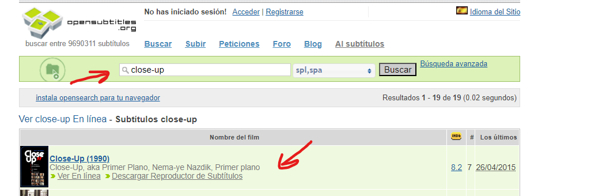
Nos mostrara todas las opciones de subtítulos disponibles,
hay que elegir la version que coincida con la que os habéis
descargado, para saberlo podéis fijaros en el nombre del archivo,
si no lo único que os queda es probar si son compatibles
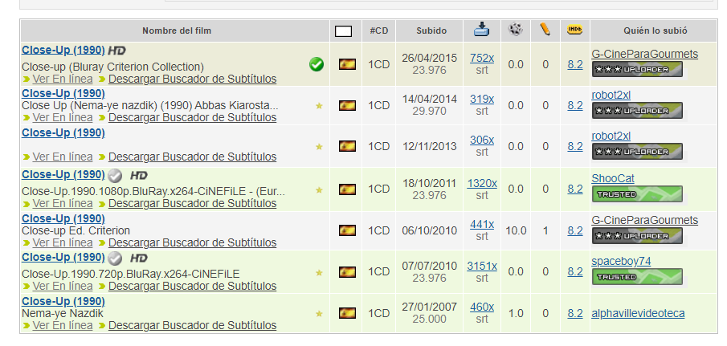
Le dais a descargar y se os bajara un archivo zip
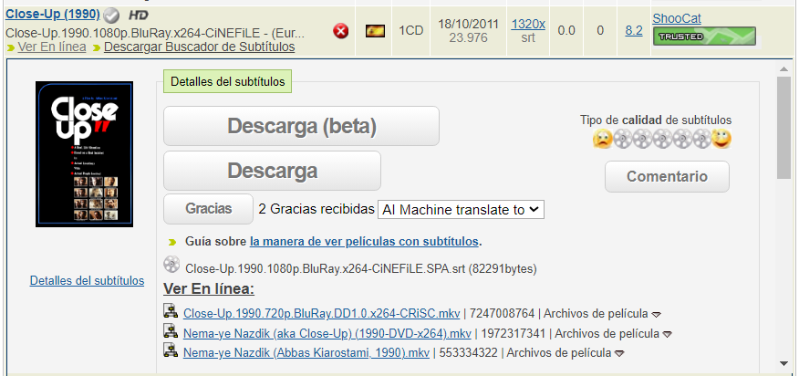
Abrís o descomprimís el archivo zip, es posible que contenga mas
de un archivo, pero el único que nos interesa el que acaba en
“.srt”, lo copiamos y pegamos donde tengamos la película
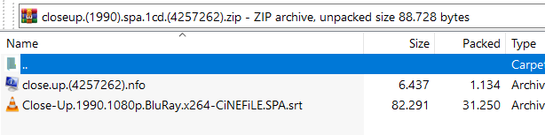
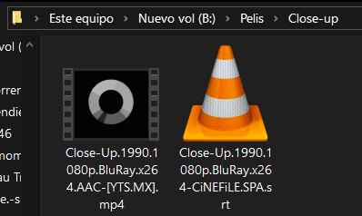
Buscamos el nombre de la pelicula
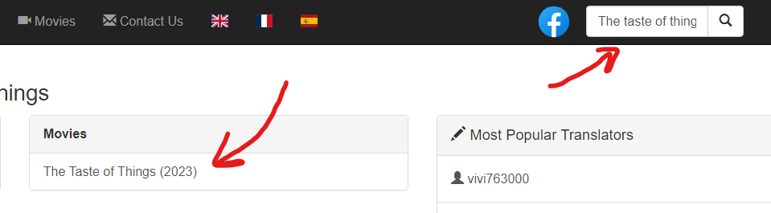
Buscamos la version del idioma que queramos y la seleccionamos,
al hacer clic se abrira otra pestaña que tras unos segundos
nos dara la opcion de descargar
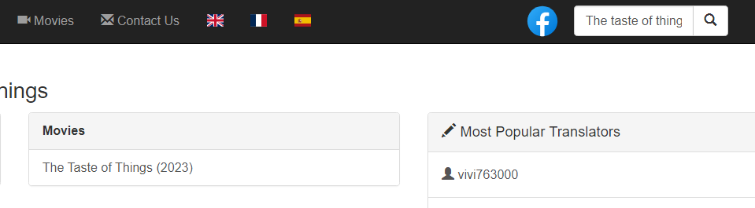
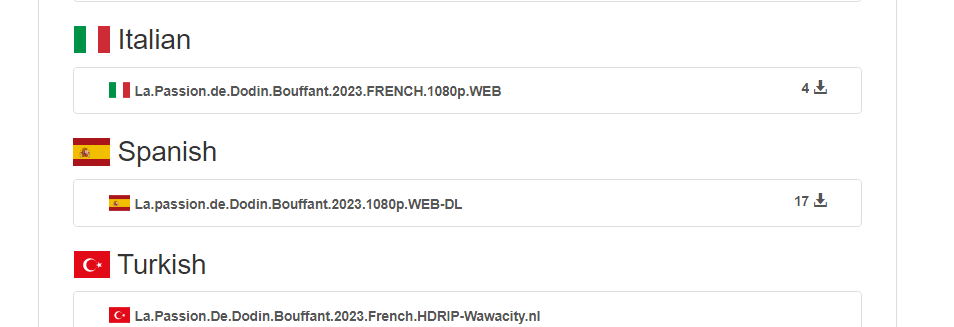
Descargamos y nos bajara el archivo “.srt”
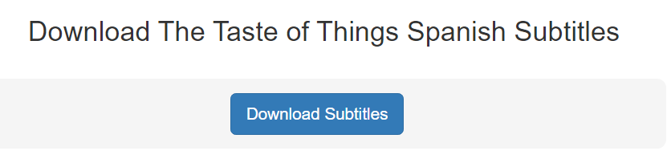
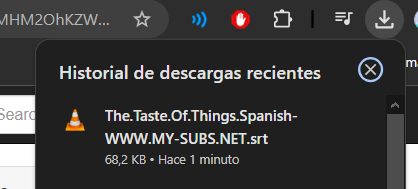
Copiamos el archivo y lo pegamos donde tengamos el archivo de la pelicula
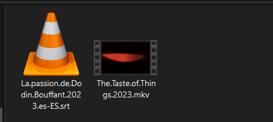
Buscas el nombre de la película aquí
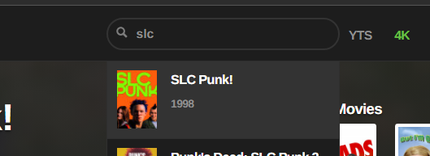
Seleccionamos descargar subtítulos
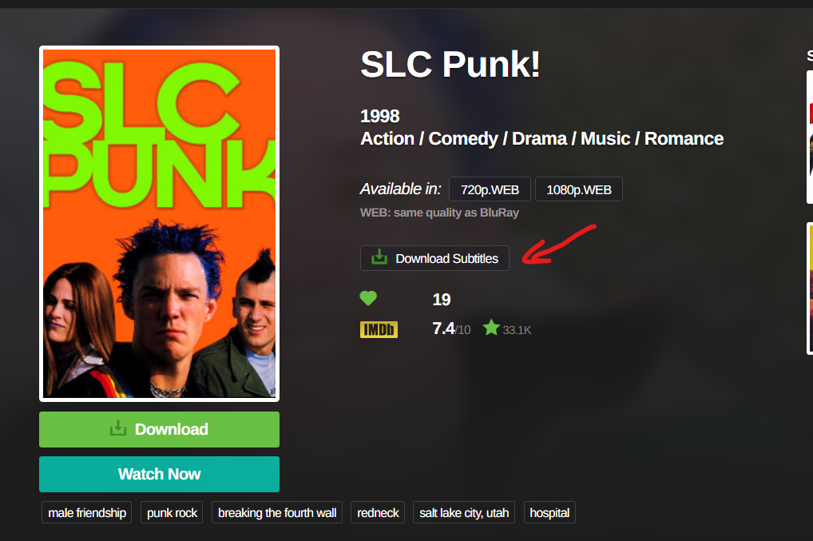
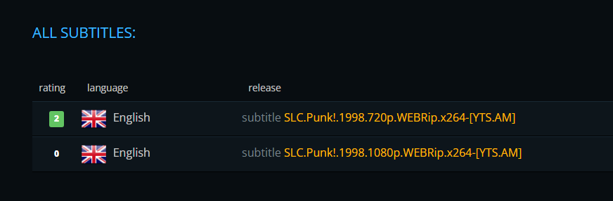
Le damos a descargar y se descargara un archivo zip
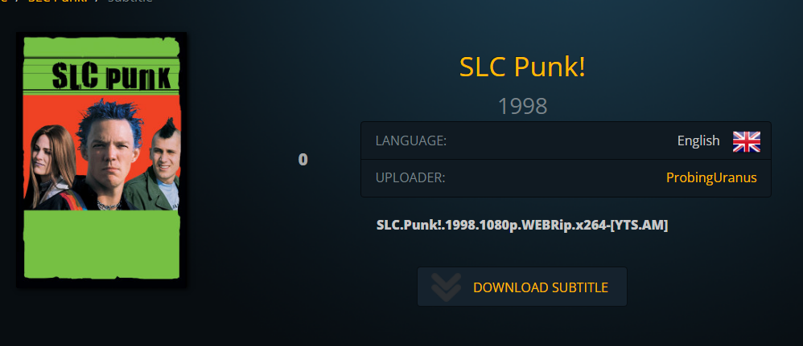
Abrimos el archivo zip y copiamos el archivo con la extensión “.srt”
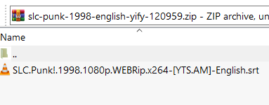
Ahora pegamos ese archivo donde tengamos la película preferiblemente
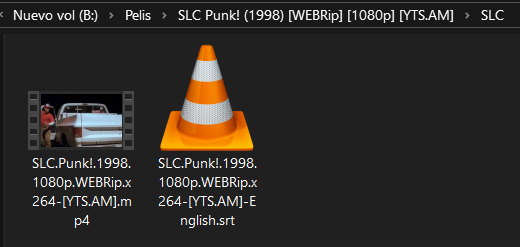